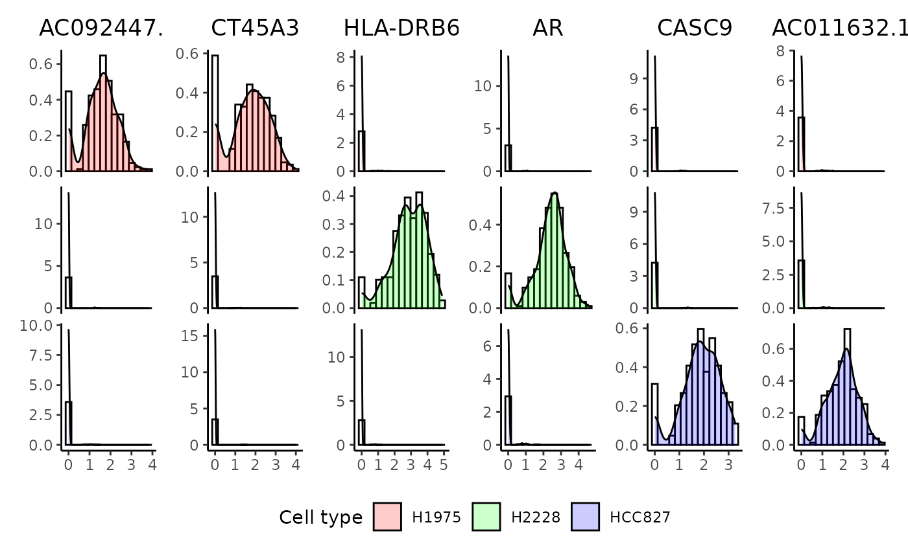
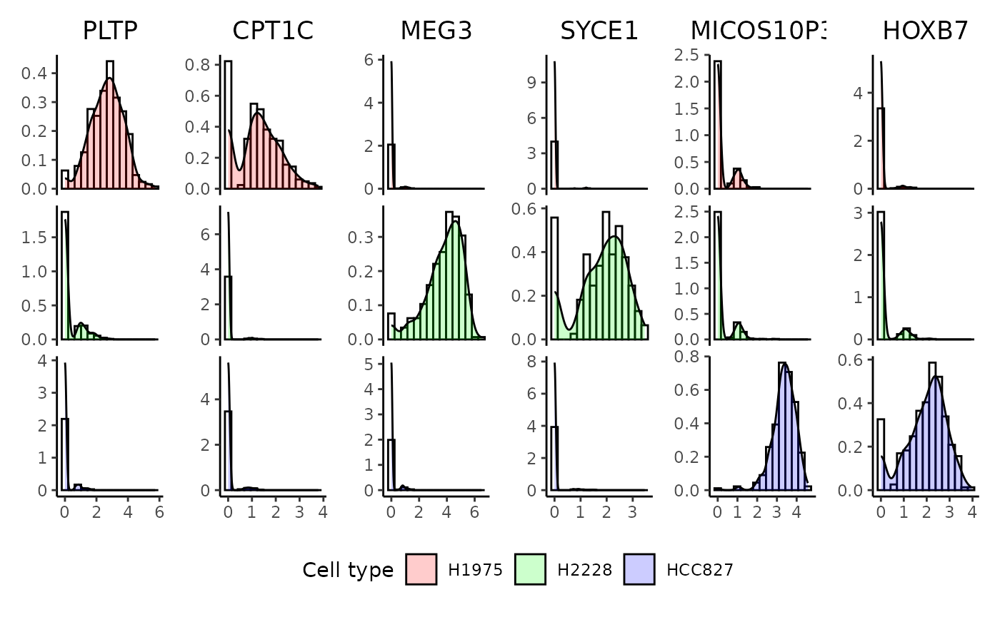
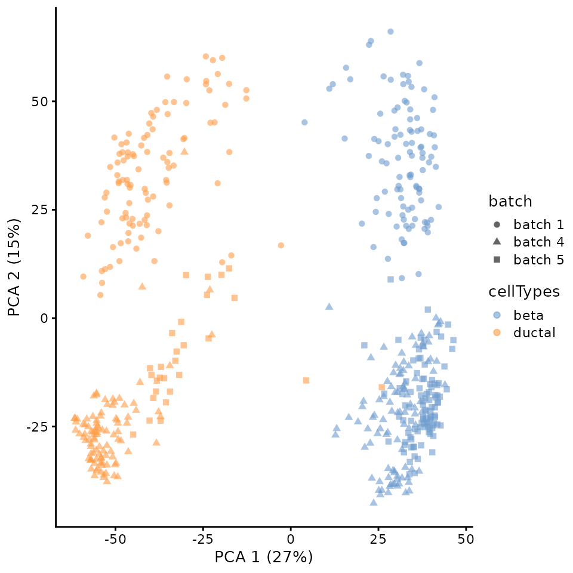
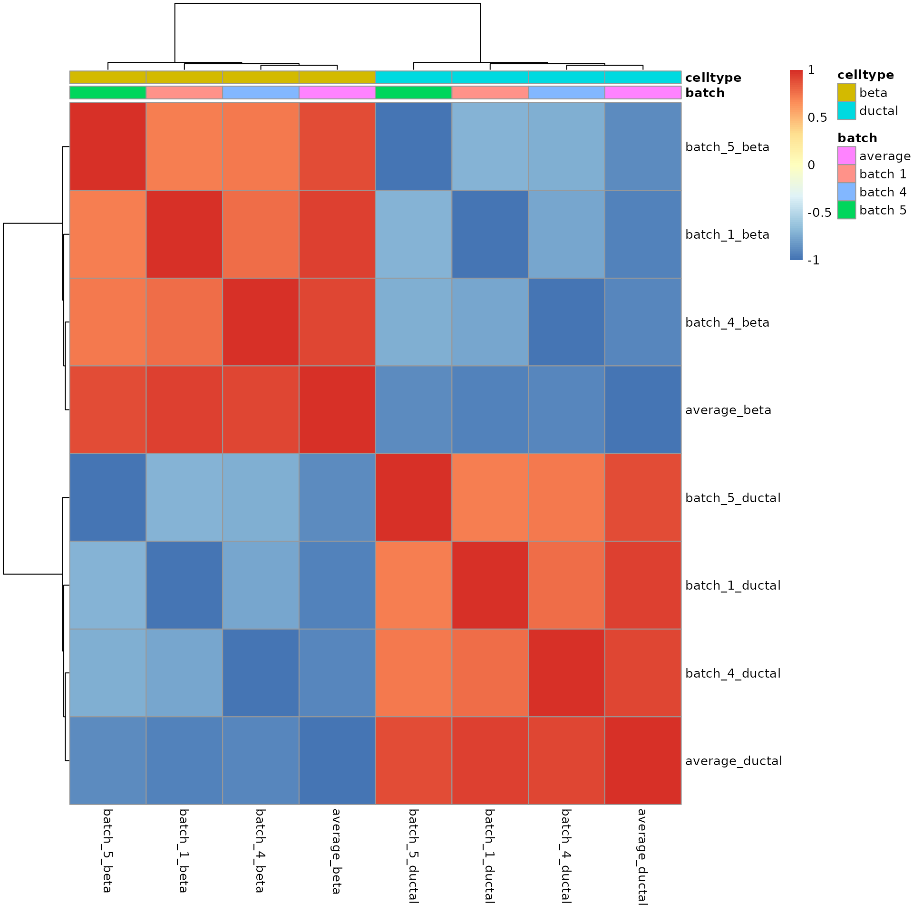

Cepo for differential stability analysis of scRNA-seq data
Hani Jieun Kim
The University of Sydneyhani.kim127@gmail.com
06/24/2024
cepo.RmdIntroduction
We introduce Cepo, a method to determine genes governing cell identity from scRNA-seq data. We propose a biologically motivated metric—differential stability (DS)—to define cell identity. Our motivation is driven by the hypothesis that stable gene expression is a key component of cell identity. This hypothesis implies that genes marking a cell type should be (i) expressed and (ii) stable in its expression relative to other cell types. We translate these criteria into a computational framework where, using predefined cell-type labels, we compute a cell-type-specific score to prioritise genes that are differential stably expressed against other cell types between all cell-type pair comparisons.
Cepo is therefore distinct from most methods for differential analysis (e.g., differential expression) that prioritise differences in the mean abundance between cell types. Cepo is able to capture subtle variations in distribution that does not necessarily involve changes in mean. Cepo is particularly suitable for large atlas data as it is computationally efficient and fast. Moreover, Cepo can perform differential stability analysis for multi-group comparisons in single-cell data.
To access the R code used in the vignettes, type:
browseVignettes("Cepo")Questions relating to Cepo should be reported as a new issue at BugReports.
To cite Cepo, type:
citation("Cepo")Package installation
The development version of Cepo can be installed with the following command:
if (!requireNamespace("BiocManager", quietly = TRUE))
install.packages("BiocManager")
BiocManager::install("Cepo")Differential stability analysis using Cepo
The differential stability analysis in Cepo aims to investigate differential stability patterns between cells of different cell types. To use Cepo one needs data with cell type labels (or cluster labels). If no cell-type labels are provided, cells first need to be clustered and classified in groups via some form of clustering algorithms. Cepo can then be applied to identify differentially stable genes between cell types.
Example data
Load the example dataset, a small and randomly sampled subset of the Cellbench dataset consisting of 3 cell types 895 cells and 894 genes.
## class: SingleCellExperiment
## dim: 894 895
## metadata(3): scPipe Biomart log.exprs.offset
## assays(2): counts logcounts
## rownames(894): AP000902.1 TNNI3 ... SCMH1 IGF2BP2
## rowData names(0):
## colnames(895): CELL_000001 CELL_000003 ... CELL_000955 CELL_000965
## colData names(17): unaligned aligned_unmapped ... sizeFactor celltype
## reducedDimNames(0):
## mainExpName: NULL
## altExpNames(0):
cellbench = cellbench[!duplicated(rownames(cellbench)),]Columns of the colData indicate the individual id and
various metadata for each cell. colData contains
celltype labels, which will be required to run
Cepo. Differential stability analysis performed on the entire
cell type repertoire.
colData(cellbench)[1:5,]## DataFrame with 5 rows and 17 columns
## unaligned aligned_unmapped mapped_to_exon mapped_to_intron
## <integer> <integer> <integer> <integer>
## CELL_000001 167234 8341 526950 40991
## CELL_000003 174510 8608 513021 42270
## CELL_000004 158346 7796 504676 39684
## CELL_000005 159070 6968 486645 38252
## CELL_000006 144914 8610 465126 33435
## ambiguous_mapping mapped_to_ERCC mapped_to_MT number_of_genes
## <integer> <integer> <integer> <numeric>
## CELL_000001 21392 0 22342 11237
## CELL_000003 20170 0 20943 11203
## CELL_000004 18628 0 14021 11237
## CELL_000005 20029 0 14100 10920
## CELL_000006 21732 0 11855 11157
## total_count_per_cell non_mt_percent non_ribo_percent outliers
## <numeric> <numeric> <numeric> <factor>
## CELL_000001 266880 0.823985 0.797096 FALSE
## CELL_000003 251204 0.828956 0.801715 FALSE
## CELL_000004 250040 0.839618 0.816149 FALSE
## CELL_000005 244441 0.838746 0.798577 FALSE
## CELL_000006 235288 0.817904 0.788378 FALSE
## cell_line cell_line_demuxlet demuxlet_cls sizeFactor celltype
## <character> <character> <character> <numeric> <character>
## CELL_000001 HCC827 HCC827 SNG 2.15032 HCC827
## CELL_000003 HCC827 HCC827 SNG 2.00889 HCC827
## CELL_000004 HCC827 HCC827 SNG 2.06447 HCC827
## CELL_000005 HCC827 HCC827 SNG 1.92110 HCC827
## CELL_000006 H1975 H1975 SNG 1.92716 H1975Note that, if cell-type labels are unknown, we would need to cluster cells into groups via some clustering algorithm. In the example dataset, we have 3 cell types, H1975, H2228 and HCC827, all of which are commonly used cell lines of lung adenocarcinomas.
unique(cellbench$celltype)## [1] "HCC827" "H1975" "H2228"Run Cepo to generate list of cell identity genes
Main arguments of Cepo
There are two main arguments to Cepo: 1)
exprsMat is the input data, which should be normalized
data, such as counts per million (CPM) or log2-CPM (e.g.,
logcounts as created via
scater::logNormCounts). 2) cellTypes receives
as input a vector of cell-type labels. Note that the cell-type labels
should be equal in length and ordered the same as the column names in
exprsMat.
The Cepo function returns a list of two elements by
default. The first element is a DataFrame of DS statistics.
In this DataFrame, each column corresponds to the DS
statistics for that celltype across all genes. A higher DS statistic
value denotes a gene that is more prioritized as a differentially stable
gene in that given cell type. In the output DataFrame, the columns
correspond to each cell type and each row correspond to a gene.
ds_res## $stats
## DataFrame with 889 rows and 3 columns
## H1975 H2228 HCC827
## <numeric> <numeric> <numeric>
## AC092447.7 0.852809 -0.450000 -0.402809
## CT45A3 0.834831 -0.408146 -0.426685
## AL049870.3 0.815309 -0.465169 -0.350140
## TDRD9 0.753652 -0.440871 -0.312781
## TNNI3 0.748876 -0.358848 -0.390028
## ... ... ... ...
## STK24 -0.655478 0.369663 0.285815
## CPVL -0.669382 0.136236 0.533146
## BBOX1-AS1 -0.674860 0.436657 0.238202
## COL4A2 -0.689747 0.397331 0.292416
## KCNK1 -0.700702 0.329916 0.370787
##
## $pvalues
## NULL
##
## attr(,"class")
## [1] "Cepo" "list"Filtering
In many cases, it is beneficial to perform filtering of lowly
expressed genes prior to differential analysis. The parameter
exprsPct specifies the threshold for filtering of lowly
expressed genes should be performed. By default, this is set of
NULL. A value between 0 and 1 should be provided. Whilst
there is no set rule to the threshold, we recommend a value between
0.05 and 0.07, which will keep any genes that
are expressed in 5-7% in at least one cell type, for microfluidic-based
data.
ds_res_zprop = Cepo::Cepo(exprsMat = logcounts(cellbench),
cellTypes = cellbench$celltype,
exprsPct = 0.5)The parameter logfc specifies minimum log fold-change in
gene expression. A value of 0.2 will keep any genes that
show at least abs(0.2) log fold change in gene expression
in at least one cell type. By default, this value is
NULL.
Cepo outputs some useful stats, including the number of
genes nrow and gene names rownames. By
checking nrow, we can see that as expected with filtering
the number of genes included in the Cepo run becomes
fewer.
nrow(ds_res$stats)## [1] 889
nrow(ds_res_zprop$stats)## [1] 841
nrow(ds_res_logfc$stats)## [1] 853Computing p-values
There are two methods to compute p-values in Cepo. The
fast approach uses normal approximation of the Cepo statistics to
estimate the null distribution. As this only required 100-200 sample
runs of Cepo, it is much quicker, and the default approach, than the
second permutation approach.
The output of running the p-value computation is a
DataFrame of p-values associated with the DS statistics. In
this DataFrame, each column corresponds to the p-values
associated with the DS statistics.
ds_res_pvalues = Cepo(exprsMat = logcounts(cellbench),
cellType = cellbench$celltype,
computePvalue = 200,
prefilter_pzero = 0.4)## Prefiltering 235 genes....We can visualise the correlation between the Cepo statistics and -log10 p-values.
idx = rownames(ds_res_pvalues$stats)
par(mfrow=c(1,3))
for (i in unique(cellbench$celltype)) {
plot(rank(ds_res_pvalues$stats[[i]]),
rank(-log10(ds_res_pvalues$pvalues[idx, i])),
main = i,
xlab = "rank Cepo statistics",
ylab = "rank -log10 p-values")
}The permutation approach requires the users to set the
computePvalue argument to a number of bootstrap runs
required (we recommend this to be at least 10000). Each column of the
DataFrame corresponds to the p-values associated with the
DS statistics obtained through bootstrap on the cells.
ds_res_pvalues = Cepo(exprsMat = logcounts(cellbench),
cellType = cellbench$celltype,
# we use a low value for demonstration purposes
computePvalue = 100,
computeFastPvalue = FALSE)
ds_res_pvalues## $stats
## DataFrame with 889 rows and 3 columns
## H1975 H2228 HCC827
## <numeric> <numeric> <numeric>
## AC092447.7 0.852809 -0.450000 -0.402809
## CT45A3 0.834831 -0.408146 -0.426685
## AL049870.3 0.815309 -0.465169 -0.350140
## TDRD9 0.753652 -0.440871 -0.312781
## TNNI3 0.748876 -0.358848 -0.390028
## ... ... ... ...
## STK24 -0.655478 0.369663 0.285815
## CPVL -0.669382 0.136236 0.533146
## BBOX1-AS1 -0.674860 0.436657 0.238202
## COL4A2 -0.689747 0.397331 0.292416
## KCNK1 -0.700702 0.329916 0.370787
##
## $pvalues
## DataFrame with 889 rows and 3 columns
## H1975 H2228 HCC827
## <numeric> <numeric> <numeric>
## AC092447.7 0 1 1
## CT45A3 0 1 1
## AL049870.3 0 1 1
## TDRD9 0 1 1
## TNNI3 0 1 1
## ... ... ... ...
## STK24 1 0 0
## CPVL 1 0 0
## BBOX1-AS1 1 0 0
## COL4A2 1 0 0
## KCNK1 1 0 0
##
## attr(,"class")
## [1] "Cepo" "list"Visualizing results
We can visualize the overlap of differential stability genes between cell types.

Density plot of two genes from each cell type.
plotDensities(x = cellbench,
cepoOutput = ds_res,
nGenes = 2,
assay = "logcounts",
celltypeColumn = "celltype")## AC092447.7, CT45A3, HLA-DRB6, AR, CASC9, AC011632.1 will be plotted## Warning: The dot-dot notation (`..density..`) was deprecated in ggplot2 3.4.0.
## ℹ Please use `after_stat(density)` instead.
## ℹ The deprecated feature was likely used in the Cepo package.
## Please report the issue to the authors.
## This warning is displayed once every 8 hours.
## Call `lifecycle::last_lifecycle_warnings()` to see where this warning was
## generated.
We can also specify the genes to be plotted.
plotDensities(x = cellbench,
cepoOutput = ds_res,
genes = c("PLTP", "CPT1C", "MEG3", "SYCE1", "MICOS10P3", "HOXB7"),
assay = "logcounts",
celltypeColumn = "celltype")
Running Cepo in a pipeline
Example data
We will load an example dataset, a small, randomly subsampled subset of the human pancreas datasets from the scMerge paper consisting of 3 batches, 2 cell types, 528 cells, and 1358 genes.
data("sce_pancreas", package = "Cepo")
sce_pancreas## class: SingleCellExperiment
## dim: 1403 528
## metadata(0):
## assays(1): counts
## rownames(1403): SCGN SCG5 ... IFITM3 ZFP36L1
## rowData names(0):
## colnames(528): human2_lib2.final_cell_0117 human1_lib3.final_cell_0318
## ... 9th_C61_S25 9th_C84_S60
## colData names(2): batch cellTypes
## reducedDimNames(0):
## mainExpName: NULL
## altExpNames(0):Given the presences of batches, we will visualize the data for any batch effect. Clearly these is separation of the data points by batch.
## Loading required package: scuttle## Loading required package: ggplot2
sce = sce_pancreas
sce = scater::logNormCounts(sce)
sce = scater::runPCA(sce)
scater::plotPCA(
sce,
colour_by = "cellTypes",
shape_by = "batch")
scMerge to remove batch effect
We can run the analysis on batch corrected data. For this, we can implement batch correction methods on the data suing batch correction methods such as scMerge.
## [1] "AAR2" "AATF" "ABCF3" "ABHD2" "ABT1" "ACAP2"
corrected <- scMerge(
sce_combine = sce,
ctl = segList$human$human_scSEG,
kmeansK = c(2, 2),
assay_name = "scMerge",
cell_type = sce$cellTypes)## Dimension of the replicates mapping matrix:
## [1] 528 2## Step 2: Performing RUV normalisation. This will take minutes to hours.## scMerge complete!Let us visualise the corrected data.
Running Cepo by batch
Rather than running Cepo on the corrected values, we can run
the differential analysis independently on individual batches using the
block argument. By default, the block argument
is set to NULL, ignoring batch information. If batches are
present and the data is not corrected for batch effect, ensure you run
the analyses by block.
ds_res_batches = Cepo::Cepo(exprsMat = logcounts(sce),
cellTypes = sce$cellTypes,
block = sce$batch,
minCelltype = 2)Note that the resulting output in a list of Cepo class
objects where each slot denotes the individual results for the three
batches, as well as the averaged results saved as
average.
names(ds_res_batches)## [1] "batch 1" "batch 4" "batch 5" "average"We can confirm that the Cepo statistics from across
batches demonstrate a strong correlation. The clustered correlation
heatmap below shows that there is high correlation between the scores of
the same cell type across batches.
idx = Reduce(intersect, lapply(ds_res_batches, function(x) names(x$stats[, 1])))
combinedRes = as.data.frame(do.call(cbind, lapply(ds_res_batches, function(x)
x$stats[idx,]
)))
batches = rep(names(ds_res_batches), sapply(ds_res_batches, function(x) length(x$stats)))
cty = unlist(lapply(ds_res_batches, function(x) names(x$stats)), use.name = FALSE)
colnames(combinedRes) = gsub("[.]", "_", colnames(combinedRes))
annot = data.frame(
batch = batches,
celltype = cty
)
rownames(annot) = colnames(combinedRes)
pheatmap::pheatmap(cor(combinedRes),
annotation = annot)
Downstream analyses using Cepo genes
Marker gene identification and visualisation
One of the useful applications of Cepo is to find marker
genes or cell identity genes on clustered data. We can visualise the top
three marker genes for beta and ductal cells on the PCA.
cepo_genes = Cepo::topGenes(ds_res_batches$average, n = 3)
markersPlot = lapply(cepo_genes, function(x) {
pp = lapply(x, function(gene) {
p = scater::plotPCA(
corrected,
colour_by = gene,
shape_by = "cellTypes")
return(p)
})
pp = patchwork::wrap_plots(pp, ncol = 3) + patchwork::plot_layout(guides = "auto")
return(pp)
})
patchwork::wrap_plots(markersPlot, nrow = 2)
Gene set enrichment analysis
We can also perform a plethora of downstream analyses, from gene set
enrichment analyses to deconvolution of bulk RNA-seq, with the cell
identity gene scores generated from the Cepo package. As an
example, we will perform gene set enrichment analysis using the
fgsea and escape package.
library(escape)
library(fgsea)
hallmarkList <- getGeneSets(species = "Homo sapiens",
library = "H")
fgseaRes <- fgsea(pathways = hallmarkList,
stats = sort(ds_res_batches[4]$average$stats[,"beta"]),
minSize = 15,
maxSize = 500)## Warning in preparePathwaysAndStats(pathways, stats, minSize, maxSize, gseaParam, : There are ties in the preranked stats (0.93% of the list).
## The order of those tied genes will be arbitrary, which may produce unexpected results.
enriched_beta <- -log10(fgseaRes[order(pval), "padj"][[1]])
names(enriched_beta) <- fgseaRes[order(pval), "pathway"][[1]]Note the top 5 enriched pathways for beta cells.
enriched_beta[1:5]## HALLMARK-PANCREAS-BETA-CELLS HALLMARK-TNFA-SIGNALING-VIA-NFKB
## 9.231295 6.972586
## HALLMARK-INTERFERON-GAMMA-RESPONSE HALLMARK-APICAL-JUNCTION
## 5.775918 2.270796
## HALLMARK-MITOTIC-SPINDLE
## 2.185296Finally, we can visualise the enrichment using the
plotEnrichment function from the fgsea
package.
plotEnrichment(hallmarkList[["HALLMARK-PANCREAS-BETA-CELLS"]],
sort(ds_res_batches$average$stats[, "beta"])) + labs(title="HALLMARK-PANCREAS-BETA-CELLS")
Running out-of-memory computation with Cepo
To facilitate analysis of high-throughput atlas data consisting of
millions of cells, Cepo also enables out-of-memory and
parallel computation.
The Cepo function naturally handles matrices under the
DelayedArray wrapper. Briefly, DelayedArray is
a wrapper around many matrix classes in R, including
matrix, sparseMatrix and
HDF5Array. The last of which allows for out-of-memory
computation, which means the computation is done outside of RAM. This
will inevitably slow down the computational speed, but the major gain in
doing this is that we can perform computations on data much larger than
what our RAM can store at once.
## Loading required package: Matrix##
## Attaching package: 'Matrix'## The following object is masked from 'package:S4Vectors':
##
## expand## Loading required package: S4Arrays## Loading required package: abind##
## Attaching package: 'S4Arrays'## The following object is masked from 'package:abind':
##
## abind## The following object is masked from 'package:base':
##
## rowsum## Loading required package: SparseArray##
## Attaching package: 'DelayedArray'## The following objects are masked from 'package:base':
##
## apply, scale, sweep## Loading required package: rhdf5##
## Attaching package: 'HDF5Array'## The following object is masked from 'package:rhdf5':
##
## h5ls
da_matrix = DelayedArray(realize(logcounts(cellbench), "HDF5Array"))
class(da_matrix)## [1] "HDF5Matrix"
## attr(,"package")
## [1] "HDF5Array"## [1] "HDF5ArraySeed"
## attr(,"package")
## [1] "HDF5Array"
da_output = Cepo(exprsMat = da_matrix, cellType = cellbench$celltype)Even though out-of-memory computation is slow, one way that we can
speed up the computation is through parallel processing. This requires
some configurations of the DelayedArray package via the
setAutoBPPARAM function. BiocParallel package
uses the MulticoreParam parameter for Linux/Mac and
SnowParam for Windows.
library(BiocParallel)
BPPARAM = if (.Platform$OS.type == "windows") {
BiocParallel::SnowParam(workers = 2)
} else {
BiocParallel::MulticoreParam(workers = 2)
}
DelayedArray::setAutoBPPARAM(BPPARAM = BPPARAM) ## Setting two cores for computation
da_output_parallel = Cepo(exprsMat = da_matrix, cellTypes = cellbench$celltype)
DelayedArray::setAutoBPPARAM(BPPARAM = SerialParam()) ## Revert back to only one coreSession info
## R version 4.4.1 (2024-06-14)
## Platform: x86_64-pc-linux-gnu
## Running under: Ubuntu 22.04.4 LTS
##
## Matrix products: default
## BLAS: /usr/lib/x86_64-linux-gnu/openblas-pthread/libblas.so.3
## LAPACK: /usr/lib/x86_64-linux-gnu/openblas-pthread/libopenblasp-r0.3.20.so; LAPACK version 3.10.0
##
## locale:
## [1] LC_CTYPE=C.UTF-8 LC_NUMERIC=C LC_TIME=C.UTF-8
## [4] LC_COLLATE=C.UTF-8 LC_MONETARY=C.UTF-8 LC_MESSAGES=C.UTF-8
## [7] LC_PAPER=C.UTF-8 LC_NAME=C LC_ADDRESS=C
## [10] LC_TELEPHONE=C LC_MEASUREMENT=C.UTF-8 LC_IDENTIFICATION=C
##
## time zone: UTC
## tzcode source: system (glibc)
##
## attached base packages:
## [1] stats4 stats graphics grDevices utils datasets methods
## [8] base
##
## other attached packages:
## [1] BiocParallel_1.38.0 HDF5Array_1.32.0
## [3] rhdf5_2.48.0 DelayedArray_0.30.1
## [5] SparseArray_1.4.8 S4Arrays_1.4.1
## [7] abind_1.4-5 Matrix_1.7-0
## [9] fgsea_1.30.0 escape_2.0.0
## [11] scMerge_1.20.0 scater_1.32.0
## [13] ggplot2_3.5.1 scuttle_1.14.0
## [15] UpSetR_1.4.0 SingleCellExperiment_1.26.0
## [17] SummarizedExperiment_1.34.0 GenomicRanges_1.56.1
## [19] GenomeInfoDb_1.40.1 MatrixGenerics_1.16.0
## [21] matrixStats_1.3.0 Cepo_1.11.2
## [23] GSEABase_1.66.0 graph_1.82.0
## [25] annotate_1.82.0 XML_3.99-0.16.1
## [27] AnnotationDbi_1.66.0 IRanges_2.38.0
## [29] S4Vectors_0.42.0 Biobase_2.64.0
## [31] BiocGenerics_0.50.0 BiocStyle_2.32.1
##
## loaded via a namespace (and not attached):
## [1] fs_1.6.4 GSVA_1.52.3
## [3] bitops_1.0-7 httr_1.4.7
## [5] RColorBrewer_1.1-3 numDeriv_2016.8-1.1
## [7] tools_4.4.1 backports_1.5.0
## [9] utf8_1.2.4 R6_2.5.1
## [11] ResidualMatrix_1.14.0 ggdist_3.3.2
## [13] mgcv_1.9-1 rhdf5filters_1.16.0
## [15] sp_2.1-4 withr_3.0.0
## [17] gridExtra_2.3 progressr_0.14.0
## [19] cli_3.6.3 textshaping_0.4.0
## [21] labeling_0.4.3 sass_0.4.9
## [23] mvtnorm_1.2-5 robustbase_0.99-2
## [25] ggridges_0.5.6 QuickJSR_1.2.2
## [27] pkgdown_2.0.9 systemfonts_1.1.0
## [29] StanHeaders_2.32.9 foreign_0.8-86
## [31] R.utils_2.12.3 parallelly_1.37.1
## [33] bbmle_1.0.25.1 limma_3.60.3
## [35] rstudioapi_0.16.0 RSQLite_2.3.7
## [37] generics_0.1.3 gtools_3.9.5
## [39] distributional_0.4.0 dplyr_1.1.4
## [41] inline_0.3.19 loo_2.7.0
## [43] ggbeeswarm_0.7.2 fansi_1.0.6
## [45] distr_2.9.3 R.methodsS3_1.8.2
## [47] lifecycle_1.0.4 yaml_2.3.8
## [49] edgeR_4.2.0 cvTools_0.3.3
## [51] gplots_3.1.3.1 grid_4.4.1
## [53] blob_1.2.4 dqrng_0.4.1
## [55] crayon_1.5.3 bdsmatrix_1.3-7
## [57] reldist_1.7-2 densEstBayes_1.0-2.2
## [59] lattice_0.22-6 msigdbr_7.5.1
## [61] beachmat_2.20.0 cowplot_1.1.3
## [63] KEGGREST_1.44.1 magick_2.8.3
## [65] pillar_1.9.0 knitr_1.47
## [67] metapod_1.12.0 rjson_0.2.21
## [69] future.apply_1.11.2 codetools_0.2-20
## [71] fastmatch_1.1-4 glue_1.7.0
## [73] data.table_1.15.4 spam_2.10-0
## [75] vctrs_0.6.5 png_0.1-8
## [77] gtable_0.3.5 cachem_1.1.0
## [79] xfun_0.45 pheatmap_1.0.12
## [81] statmod_1.5.0 bluster_1.14.0
## [83] nlme_3.1-164 bit64_4.0.5
## [85] rstan_2.32.6 bslib_0.7.0
## [87] irlba_2.3.5.1 vipor_0.4.7
## [89] KernSmooth_2.23-24 rpart_4.1.23
## [91] colorspace_2.1-0 DBI_1.2.3
## [93] Hmisc_5.1-3 nnet_7.3-19
## [95] UCell_2.8.0 tidyselect_1.2.1
## [97] proxyC_0.4.1 bit_4.0.5
## [99] compiler_4.4.1 AUCell_1.26.0
## [101] htmlTable_2.4.2 BiocNeighbors_1.22.0
## [103] desc_1.4.3 bookdown_0.39
## [105] checkmate_2.3.1 scales_1.3.0
## [107] caTools_1.18.2 sfsmisc_1.1-18
## [109] DEoptimR_1.1-3 stringr_1.5.1
## [111] SpatialExperiment_1.14.0 digest_0.6.36
## [113] rmarkdown_2.27 XVector_0.44.0
## [115] htmltools_0.5.8.1 pkgconfig_2.0.3
## [117] base64enc_0.1-3 sparseMatrixStats_1.16.0
## [119] highr_0.11 ruv_0.9.7.1
## [121] fastmap_1.2.0 rlang_1.1.4
## [123] htmlwidgets_1.6.4 UCSC.utils_1.0.0
## [125] DelayedMatrixStats_1.26.0 farver_2.1.2
## [127] jquerylib_0.1.4 jsonlite_1.8.8
## [129] R.oo_1.26.0 BiocSingular_1.20.0
## [131] magrittr_2.0.3 Formula_1.2-5
## [133] GenomeInfoDbData_1.2.12 dotCall64_1.1-1
## [135] patchwork_1.2.0 Rhdf5lib_1.26.0
## [137] munsell_0.5.1 Rcpp_1.0.12
## [139] babelgene_22.9 viridis_0.6.5
## [141] stringi_1.8.4 zlibbioc_1.50.0
## [143] MASS_7.3-60.2 plyr_1.8.9
## [145] pkgbuild_1.4.4 parallel_4.4.1
## [147] M3Drop_1.30.0 listenv_0.9.1
## [149] ggrepel_0.9.5 Biostrings_2.72.1
## [151] splines_4.4.1 startupmsg_0.9.6.1
## [153] locfit_1.5-9.9 igraph_2.0.3
## [155] reshape2_1.4.4 ScaledMatrix_1.12.0
## [157] rstantools_2.4.0 evaluate_0.24.0
## [159] SeuratObject_5.0.2 RcppParallel_5.1.7
## [161] scran_1.32.0 BiocManager_1.30.23
## [163] batchelor_1.20.0 purrr_1.0.2
## [165] future_1.33.2 rsvd_1.0.5
## [167] xtable_1.8-4 ggpointdensity_0.1.0
## [169] viridisLite_0.4.2 ragg_1.3.2
## [171] tibble_3.2.1 memoise_2.0.1
## [173] beeswarm_0.4.0 cluster_2.1.6
## [175] globals_0.16.3